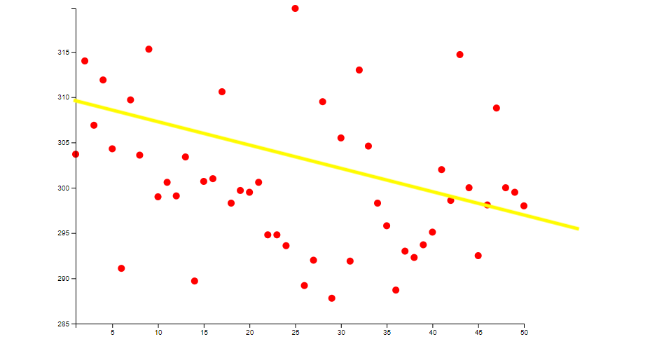

This is my first idea it is to use a line and dot plot to plot the data. I will also impliment a hover function over the dots on the graph so that you can see the players name. I also plan on taking you idea for the comparison bettwen 2 players using the golf hole I plan on having you select the player's that you want to compare by clicking on 2 of the dots and then it will use there data to create the golf comparison. For chosing what to compare I will always have the x axis be the players rank and make an html form so that the user can select the stats to compare. The purpose of this is to show all of the top 50 players so that the viewer can get a idea for the corelation aswell as to act as a selection for the golf hole part of the visualization
Link to this branch on githubnot working right now just to be show for prototype
----------------------------------------------------------------------------------------------------------------------------------------------------------------------------------------------------------
This is my second idea it is to use a dot plot for the data. I will also impliment a hover function over the dots on the graph so that you can see the players name. I also plan on taking you idea for the comparison bettwen 2 players using the golf hole I plan on having you select the player's that you want to compare by clicking on 2 of the dots and then it will use there data to create the golf comparison. For chosing what to compare I will always have the x axis be the players rank and make an html form so that the user can select the stats to compare. The purpose of this is to show all of the top 50 players so that the viewer can get a idea for the corelation aswell as to act as a selection for the golf hole part of the visualization
Link to this branch on githubnot working right now just to be show for prototype
----------------------------------------------------------------------------------------------------------------------------------------------------------------------------------------------------------
This is my third idea for the main part of the visualization and this is the one that I believe would work the best with this data set It will be kinda like the ones from above except it will have a trend line instead of lines connecting it all or a just a dot plot will also have the html form This idea will also contain the html form to choose as well as the hover to reveal name and the clicking on the dots to choose the 2 people to compare in the secondary part
----------------------------------------------------------------------------------------------------------------------------------------------------------------------------------------------------------